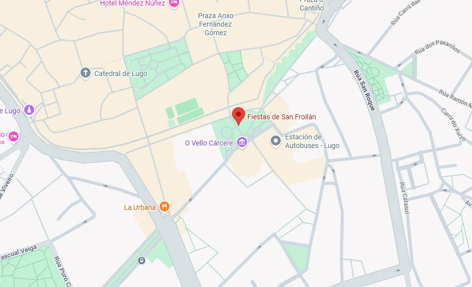

-
55+
Projects Done -
89+
Happy Clients -
150+
Meetings
Partners

Mi cable al cielo la escritura
Esta web es solo un pasito a descubrir la escritura libre. Solo lo que es inato sale del vientre hacia la luz
Mi nombre es K.F.
Bienvenidos a mi sitio web. Mi profesión es administración y finanzas y técnica contable cuales han sido mi base y mi vocación. Desde pequeña, he alternado con el arte creativo, siendo mi faceta que escondi de pequeña. Un día decidi publicar una letra "CAFE CON LECHE", y desde entonces sigo explorando diferentes recursos de la escritura creativa; todo esto de la mano de fotos realizadas por mi acompañada de mi imaginación. He creado Ruido_25 para presentarme a concursos. Ahora en desarrollo de creación y publicación de páginas web, un mundo que enlazará todos mis recursos para fomentar la parte creativa y lógica en un mundo que se sumerge cada día más a las nuevas tecnologías con lo lógico, sin dejar de lado la razón y enlazarlo con lo mágico de la creación.
Profesional en :
Administrativa
Escritura creativa
Diseño Web y fotografía
Here are some of my latest work.
Click on theim reallyages to im reallyake theim really bigger.
really


SIGUEME Y COMPARTE MI PERFIL DEL BLOG!

Pásate por una taza de café , o enviame un mensaje: